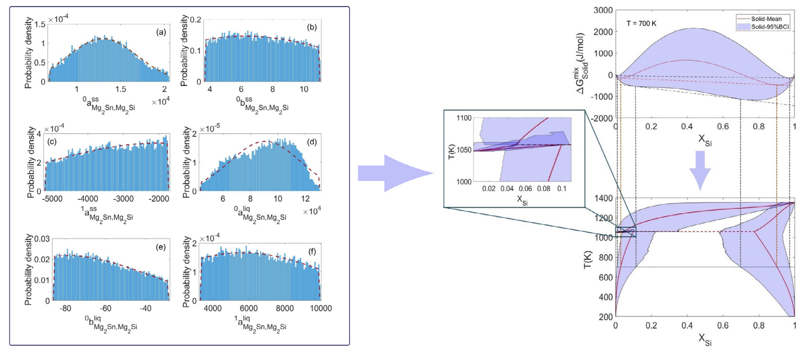
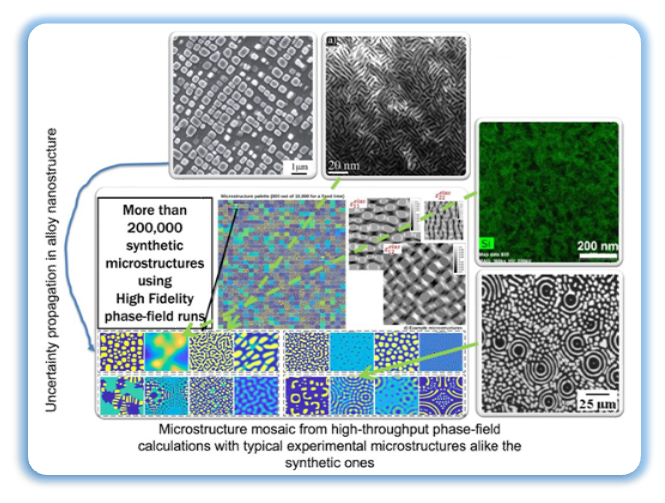

Experience the power of a high-throughput phase-field solver with our cutting-edge OPMD calculation tool. This website provides community access to a curated set of OPMD data, combining ease of access with advanced browsing capabilities. The OPMD data is meticulously presented in a user-friendly format, offering enhanced visibility and accessibility to the general public.
In addition to providing raw data, we have gone a step further by presenting the OPMD data in a graphical format. This interactive and intuitive visualization allows users to explore and interpret the data seamlessly. Our commitment to user-friendly design ensures that both experts and enthusiasts can engage with the information effortlessly, unlocking the full potential of OPMD insights. Explore the possibilities and gain valuable insights with our comprehensive OPMD data presentation.
Microstructure Thermodynamics
Initially, our approach involves employing Markov Chain Monte Carlo methodology to accurately estimate the parameters governing the CALPHAD-based phase diagram of thermoelectric materials, specifically focusing on \( \text{MgSnSi} \). This sophisticated technique allows us to derive precise insights into the intricate thermodynamic properties essential for a comprehensive understanding of the material's behavior.

An illustration of UP from thermodynamic parameters to the molar Gibbs energy of mixing, to the phase diagram for \( Mg_2Si_{x}Sn_{1−x} \) quasi-binary system at 700 K. left) the probability distributions for the six CALPHAD parameters, right) the calculated Gibbs energy of mixing at 700 K and uncertainty bands and the pseudo-binary phase diagram with a close-up of the peritectic reaction.

Microstructure Kinetics
Second, we used advanced sampling schemes to propagate uncertainties across a high-dimensional simulation input space. Synthetic microstructures are generated using CALPHAD, elastic, kinetic, and alloy composition high-throughput propagation. We generated 200,000 time series of synthetic microstructures. We then developed a database of microstructural data with accompanying time series of mechanical and physical variables. This database was used to inform the development of machine learnind models to predict the material properties of interest.
Microstructure Database
Third, microstructure databases compiles detailed information on material compositions, featuring images and associated data. This database serves as a valuable resource for researchers and enthusiasts, offering insights into the complex structures of materials.